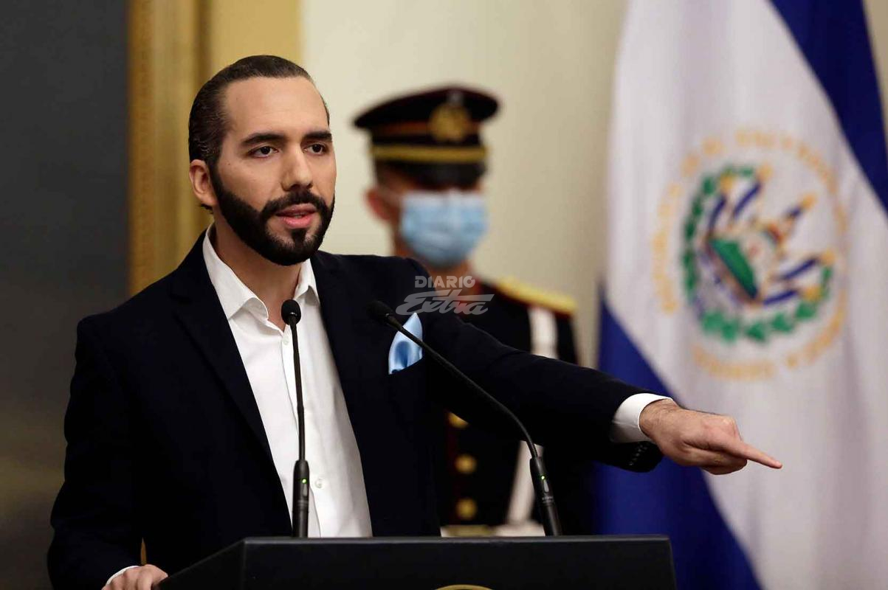

Condenan gobierno de Bukele a pagar $300 mills
San Salvador. (AFP) - | La Corte Suprema de Justicia de El Salvador ordenó este viernes al gobierno de Nayib Bukele saldar una millonaria deuda con las 262 alcaldías del país, cuyas autoridades denuncian una motivación política en el retraso, en vísperas de elecciones.
En su resolución, el tribunal dijo que el Ministerio de Hacienda "deberá llevar a cabo de manera inmediata las gestiones administrativas y financieras oportunas orientadas a depositar los fondos necesarios" a los municipios.
Según la Corporación de Municipalidades de El Salvador (Comures) el gobierno adeuda la transferencia de poco más de 300 millones de dólares para el Fondo de Desarrollo Económico y Social (Fodes).
De acuerdo con la Sala de lo Constitucional, como se llama el tribunal que emitió el fallo, los fondos para las alcaldías están pendientes de pago por parte del Ministerio de Hacienda desde junio de 2020, en medio de la pandemia por Covid-19.
El alcalde de San Salvador, Ernesto Muyshondt, señaló que el gobierno ha retenido el pago del Fodes para afectar el trabajo de las alcaldías antes de las elecciones municipales y legislativas del 28 de febrero.
La "Sala de lo Constitucional falla para que el Ministerio de Hacienda deposite de inmediato los fondos Fodes, que durante meses ha retenido de manera ilegal y por fines electoreros para perjudicar a las alcaldías del país", señaló Muyshondt en Twitter.
El tribunal ordenó el pago de los fondos a las comunas tras admitir una demanda interpuesta por el alcalde de la ciudad de Santiago Texacuangos (sureste), Alberto Estupinián.
El ministro de Hacienda, Alejandro Zelaya, ha justificado el retraso en el pago del Fodes a las alcaldías argumentando que el gobierno no posee esos recursos y los que tienen disponibles se utilizan para enfrentar la pandemia de Covid-19.
Unos 5,4 millones de salvadoreños deberán elegir el 28 de febrero a los 84 legisladores del Congreso unicameral, así como a los 262 alcaldes del país.
El partido impulsado por el presidente Bukele, Nuevas Ideas (liberal, conservador), se perfila como favorito para obtener mayoría en el Parlamento.
Información tomada de: diarioextra.com